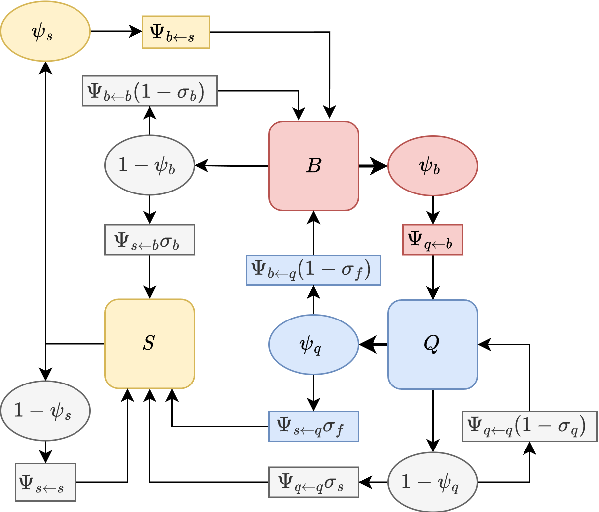

To quantify mosquito movement through one phase of the feeding cycle
– either blood feeding or egg laying – that involves an initial search
from another resource that could be followed by several failures, we
developed a ``trap’’ algorithm that computes isolates one part of the
feeding cycle.
To do so, we modify the simulation by setting to zero the parameters
describing how mosquitoes would leave the trap state. We then
initialize and follow a cohort from the point it enters that state,
iterating until almost surviving mosquitoes accumulate in the end state
(i.e., up to a predefined tolerance). We let
denote a
matrix describing net dispersal to blood feed once: it is the proportion
of mosquitoes leaving
after laying eggs that eventually blood feed successfully at each point
in
.
Similarly, we define
denote net dispersal to lay eggs after.
BQ Model
In the case of blood feeding, we begin with a cohort of mosquitoes in
that has just successfully laid eggs. In the BQ model, all
these mosquitoes launch in search of blood, some of them surviving to
end up at a point in in
:
is thus defined as a
matrix.
Some of these will successfully blood feed, and we divert these into
the trap state,
It is initialized to zero but with the same shape as
:
Now, we iterate until the sum of all
elements in
is negligible, or
:
So that
In the BQ model, we can use the same idea to compute
These are the functions compute_Kqb.BQ and
compute_Kbq.BQ
BQS Model

In the BQS model, we start out the same way, but after leaving
the trap is set at the end of blood feeding; since a blood meal is
required to lay eggs, there are no transitions back to egg laying.
Thereafter, we can compute the state transitions. Abusing notation a
bit (we let
indicate
),
Since no transitions back to
are possible, the trap matrix is:
The trap model for egg laying after blood feeding is more complicated
because an unsuccessful egg laying attempt could be followed by a sugar
feeding attempt. In this model, the implication is that the mosquito has
reabsorbed the eggs, and another blood meal is required.
and the calculation is: